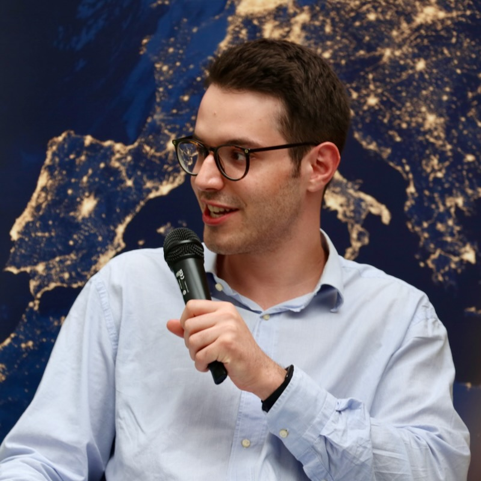

Jurek Lorber
Medicine, physics & neuroscience
I am a medical student at the University of Münster with a BSc in physics from the University of Bonn. My research focuses on mathematical models of aging processes in the brain.
Research
In Prof. Tchumatchenko’s group in Bonn, I work on mathematical modeling of aging processes in the brain. I am interested in how physics and neuroscience can help us understand brain function.
My broader interests include the neural code and the search for a unified theory of brain function. I also completed an Erasmus exchange in the neuroscience Master's programme in Athens.
Engagement
Beyond my studies, I contribute to international and interdisciplinary initiatives:
- Young European Symposium: leadership team member.
- German Academic Scholarship Foundation: spokesperson.
- German American Conference at Harvard: organizing team member.